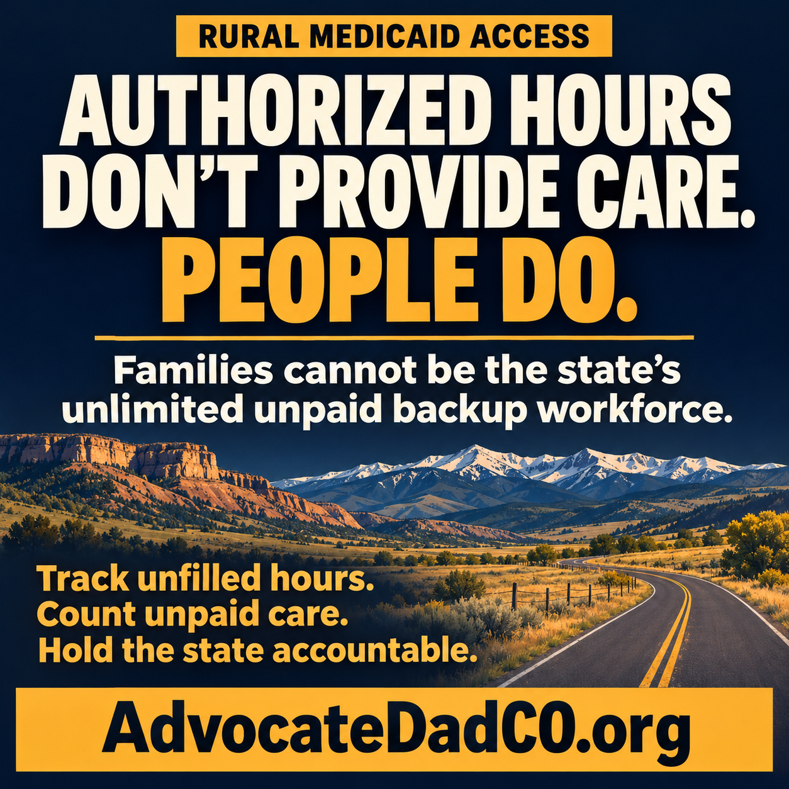

Written comments to the Colorado Commission on Medicaid
I’m Rob Harris, a parent and advocate from Grand Junction and founder of AdvocateDadCO.org. I am speaking for myself.
My request is straightforward: hold the state accountable for whether people actually receive the services Medicaid authorizes, particularly in rural communities.
An authorization on paper does not provide care. A qualified person has to be available to do the work.
What the state’s policy says
The Colorado Department of Health Care Policy and Financing’s September 2026 materials describe a weekly limit on certain paid services provided by one caregiver to one Medicaid member. The published schedule moves from 84 hours to 70 hours on January 1, 2027, and to 56 hours on July 1, 2027. HCPF states that the limit does not automatically reduce the member’s total authorized service hours; additional hours may be provided by other caregivers or through an approved exception. [1]
HCPF also identifies documented recruitment difficulties among the circumstances that may support an exception. Its published process states that caregivers may continue providing hours above the limit while an exception request is under review, until HCPF issues a decision. [2]
What that means for rural families
The distinction between authorized hours and one caregiver’s paid hours matters. But it does not answer the practical question: Who provides the care when another worker cannot be found?
“Find another caregiver” is not a staffing plan.
For rural families, a workable plan requires someone qualified, available, willing to travel, and able to cover the needed schedule. A list of agencies does not establish that those workers exist.
When a family fills the gap without pay, the need has not disappeared. The cost has moved. That cost may show up as lost wages, interrupted employment, exhausted caregivers, or someone going without necessary help.
Families cannot be the state’s unlimited unpaid backup workforce.
I support safe working conditions and a stable caregiving workforce. Limiting one person’s paid hours does not, by itself, recruit or retain another worker.
Three specific requests
1. Require a workable continuity-of-care plan.
Before implementing a caregiver-limit change in an existing arrangement, require documentation showing how needed care will actually be delivered. An agency referral alone should not count as proof of replacement staffing. Identify who must resolve an unfilled shift and what happens when recruitment fails. Include the person receiving services in planning and respect their preferences.
2. Make exceptions accessible, timely, and effective.
Provide understandable notices, accessible application assistance, receipt confirmation, request tracking, and written reasons for decisions. Evaluate actual rural recruitment conditions. Clearly communicate and consistently apply HCPF’s published protection for care during exception review. Explain available review or appeal options and the steps families can take if needed care remains unstaffed.
3. Require public reporting on actual access and unpaid care.
Recommend that HCPF publish an initial report within 60 days after the January 1, 2027 phase takes effect, followed by quarterly reporting and another review after the July phase. Report:
- Authorized service hours that went unfilled and how long gaps lasted.
- Exception requests, decisions, processing times, and reasons for denial.
- Care shifted to unpaid family members and reported effects on their employment.
- Differences between rural and urban communities.
- Corrective actions, the official responsible, and completion dates.
Establish a baseline before the January change. Use service-delivery information and direct, voluntary input from members and caregivers. Paid claims alone cannot show how much unpaid care a family supplied or how much help someone went without. Protect individual privacy.
The commission should schedule a public follow-up where HCPF answers for the results and people receiving services can respond.
A budget reduction does not tell us whether a policy worked.
Show us whether people got care, whether families could keep working, and whether people could remain safely in their communities.
That is the accountability I am asking for.
Read my earlier submitted Medicaid Commission comments
Sources
- HCPF, “Weekly Caregiver Cap,” September 2026 — commission LTSS fact sheet packet, page 33 (PDF). Explains the phased schedule and the distinction between caregiver limits and authorized service hours.
- HCPF, “Weekly Caregiver Cap” — exception circumstances and review process, packet pages 34–35 (PDF). Describes recruitment difficulties and continuation of hours above the limit during review.
The policy facts above describe HCPF’s published September 2026 guidance. The three requests are recommendations for action.